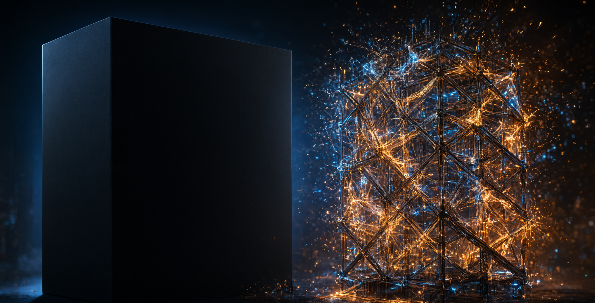
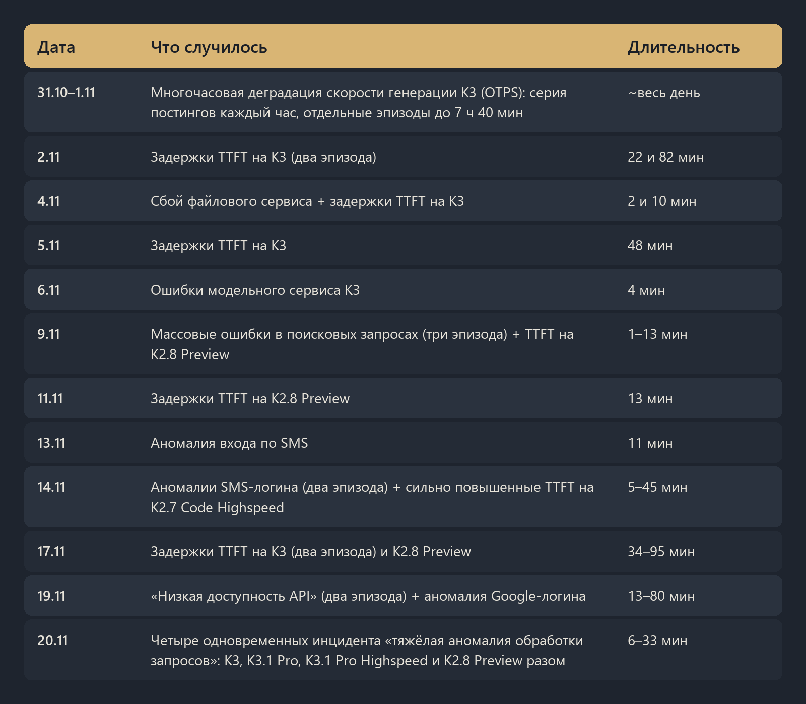
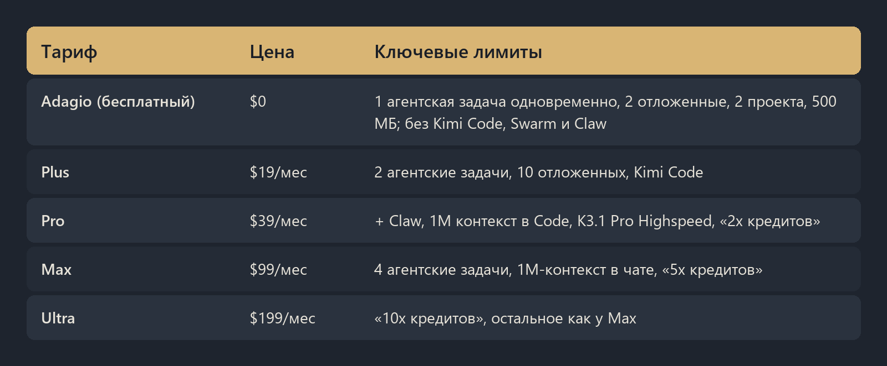
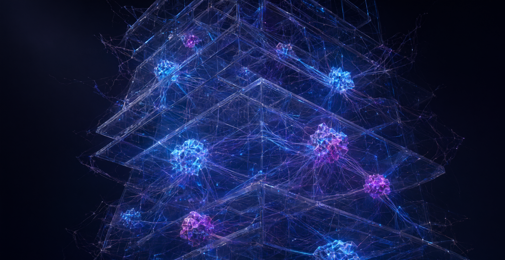

Пока DeepSeek прячется под корягу, нейросеть Kimi захлёбывается и молит о пощаде

Кратко: DeepSeek после 8,6-кратного роста нагрузки молча срезал лимиты бесплатным и не объясняется. Kimi (Moonshot AI) пошла другим путём: публично признала перерасход квоты, компенсировала подписчикам и всё равно не справилась, очереди достаются и платным, а лимиты Kimi Code урезаны. Две тактики, причина общая: железо не успевает за спросом.
Мой заход в Kimi
Пока сидел и ломал голову какую нейросетку использовать, дай думаю зайду потестирую пока не тронутую Kimi. Зашел в чат и уже после первого сообщения мне пишут что сеть перегружена переходите на платный тариф или зайдите позже и что самое интересное так происходило несколько дней, один запрос или ни одного вовсе и всё простите-извините. Думаю дай посмотрю что да как там обстоят дела, а тааам, всё еще хуже чем у DeepSeek.
Так я и попал в этот сюжет: сначала как пользователь, который просто хотел спросить, потом как человек, который сел считать инциденты.
Что случилось 19 ноября
19 ноября нейросеть Kimi пережила массовый сбой. Пользователи жаловались на недоступность сайта и приложения, медленную загрузку и проблемы со входом. Сбой нейросети Kimi затронул и API, и вход. Чат с нейросетью в те часы больше напоминал очередь: форма открывается, а ответа нет. Логи инцидентов и пинг сервиса показывали то же самое. По данным агрегатора сбоев instatus, инцидент длился около трёх часов, в пике, до 98 пользовательских жалоб в час (статус-борд при этом публиковал только два эпизода «низкой доступности API», разница методик: жалобы пользователей против записей провайдера).
Статус-борд Moonshot подтвердил картину и даже время. Инцидент, деградация, аптайм: три слова, которыми потом описывался весь месяц. В 17:25 по пекинскому времени (09:25 UTC) появился первый постинг «низкая доступность API», его закрывали 80 минут, затем инцидент всплыл повторно ещё на 20 минут. Параллельно фиксировалась «аномалия входа через Google» (13 минут). К вечеру всё закрыли как resolved, но осадок остался: это был не точечный сбой, а день, когда сервис целиком застревал в очередях.
Важная деталь для российской аудитории: 17 ноября, за два дня до этого, российские пользователи массово ловили сбои сразу у Google, DeepSeek и Discord, об этом писала «Фонтанка». Так что часть жалоб из Москвы и Петербурга на «неработающий Kimi» в те дни могла быть сетевой, а не проблемой самой Kimi. Географию жалоб в статье лучше не форсировать.
Хронология: месяц шторма
Это не единичный случай и не «вирус». Это серия деградаций, растянутая на недели: нагрузка росла, а вместе с ней росла и очередь. В такие недели аптайм держится на честном слове, и любой сбой бьёт по всем моделям сразу. Чаще других в этих записях фигурирует Kimi K3: на него приходится почти вся тяжесть месяца. За первые 20 дней ноября статус-борд Moonshot опубликовал 34 постинга об инцидентах, в среднем 1,7 постинга в день. Методика честная: считаю по статус-фиду, где многочасовой эпизод публиковался почасово, то есть независимых аварий меньше тридцати четырёх, но каждая запись это официально признанная деградация, а не жалоба пользователя. А если взять последние семь недель (со 2 октября), набирается ровно 50 постингов за 50 дней, по инциденту в день.

Расшифровка терминов для читателя: TTFT это «время до первого токена», то есть сколько секунд сервис думает, прежде чем начать отвечать; OTPS это скорость генерации ответа. Оба показателя в ноябре проседали чаще остальных метрик.
Отдельно про самую тяжёлую ночь. С 31 октября по 1 ноября сервис почти сутки не мог держать скорость генерации K3: статус-борд публиковал новый постинг буквально каждый час, и в каждом сообщении звучало «серьёзное снижение скорости генерации», от полутора часов до почти восьми. Это не «заметили и починили за пять минут» это день, когда compute кончился.
Октябрь был только разминкой: ошибки поиска 2 и 9 октября, задержки 21-го, волна TTFT-инцидентов 26–28 октября, и сразу после этого началась октябрьско-ноябрьская «ночь генерации».
Это не атака и не вирус. Это перегрузка от собственного роста.
Цифра, которая всё объясняет
Если свести 90 дней наблюдений по компонентам Kimi (зеркало официального статус-фида Moonshot, снимок от 24 ноября), картина становится однозначной. Сайт: 100% uptime по пингу и логам провайдера. Админка провайдера видит нагрузку первой, пользователю достаётся только плашка. Открытый API: 99,94%. Поиск: 99,95%. Файловая загрузка: 99,97%. Прошлая линейка: 100%. Актуальный флагман, K3.1 Pro, держит 99,69%, его Highspeed-версия: 98,66%.
А теперь то, из-за чего весь разговор: нейросеть Kimi K3, флагман прошлого поколения, держит 92,17% uptime за 90 дней. Худший показатель во всей системе, с отрывом. Модель Kimi K3 тянула всю нагрузку осени.
Переведём: за последние три месяца линейка K3 была полностью исправна примерно 83 дня из 90. Семь дней её либо лихорадило, либо она лежала. Шторм бил именно по прошлому поколению; актуальный K3.1 Pro пока держится, но застрахованным его считать нельзя: 20 ноября инциденты прошли одновременно по K3, K3.1 Pro, Highspeed и K2.8 Preview.
Платные тоже задыхаются
Самое болезненное в этой истории: платный тариф не спасает. Оплата даёт модель, но не место в очереди: квота, пик и латентность бьют и по подписчикам. Квота токенов Kimi сгорает за один длинный сеанс.
25 октября, через день после выхода K3.1 Pro, Moonshot AI публично признала: новая модель расходует квоту «ненужным образом», и объявила компенсацию. По сообщениям Seeking Alpha, подписчикам, которые успели израсходовать менее 25% лимита, обнулили счётчик расхода; по оценке самой компании, восстановленный объём это примерно неделя использования. Пресса подхватила формулу «компенсация 25% месячной квоты».
Причина в архитектуре. K3.1 Pro ест квоту быстрее, чем Kimi K3: при сложном запросе нейросеть запускает суб-агентов: вспомогательные процессы, которые разбивают задачу на части и каждую решают отдельно. Каждый такой процесс расходует отдельные токены на размышление, инструменты и проверку ошибок. Цепочка из пяти агентов на одном «проверь проект» сжигает окно квоты со скоростью, которую пользователь не ожидает ни от какой предыдущей версии. Каждый такой ИИ-агент, отдельный расход, и подписка Kimi Code выгорает быстрее, чем кажется.
Характерные жалобы из сообщества (единичные источники): пользователь отправил короткий запрос «проверь архитектуру проекта», K3.1 Pro запустила пять суб-агентов, и через 15 минут его 5-часовое окно квоты было исчерпано. Другой на видео-задаче сжёг 87% пятичасового лимита, так и не получив результата. Аналогичное массовое настроение видно в Reddit-треде «Kimi 2.7 Code съедает лимит на порядки быстрее, чем K2.6».
И даже когда квота формально есть, нейросеть может не пустить платного: в часы пик пользователи видят предложение «сервис перегружен, попробуйте позже или обновите тариф для ускорения». То есть деньги подписки гарантируют доступ к модели, но не гарантируют доступ к мощностям.
Параллельно Kimi урезает лимиты Kimi Code, без анонса и без объяснений. По сообщениям сообщества (Reddit, без официального анонса), недельные лимиты Kimi Code срезали примерно до 37% от прежних, с ~$670 до ~$250 в неделю на старшем тарифе. Справка Kimi при этом уточняет: у новых тарифов недельного лимита нет вовсе, только скользящее 5-часовое окно; жалобы касаются «наследных» планов, где недельный лимит сохраняется. А с 31 октября линейка K2 закрыта для новых пользователей API, старые модели уходят на пенсию, и весь трафик замыкается на K3.1 Pro.

Общая механика подписки Kimi: у новых тарифов действует скользящее 5-часовое окно расхода, у старых, ещё и недельный лимит с сбросом раз в 7 дней. Лимиты нейросети Kimi считаются по кредитам, а кредиты переводятся в токены. И важный нюанс: даже обычный чат на K2.6 теперь расходует кредиты подписки: «просто поболтать бесплатно в подписке» больше не существует.
Почему это происходит: «умная» модель = «прожорливая» модель
Модель нейросети Kimi K3.1 Pro, 3T-класса: 2,8 трлн параметров в MoE-архитектуре (104 млрд активных на токен), контекст 1 миллион токенов, нативная мультимодальность, MXFP4-квантование при обучении. Разработка шла вокруг агентных сценариев, и каждая новая фича добавляет запросы. Программирование под агентов требует другого бюджета, чем обычный чат. Ни фреймворк, ни язык тут не спасают: узкое место железо. Она создана для долгих агентских задач: сама разбивает задачу, вызывает инструменты, запускает суб-агентов, проверяет себя и исправляет ошибки. Это её сила. И её проклятие.
Когда пользователь просит «проверь архитектуру», нейросеть не отвечает текстом. Она запускает флот ИИ-агентов, которые делают работу за него. Каждый агент это лишние токены, лишняя латентность и лишняя нагрузка на серверы. Токены Kimi Code при этом расходуются быстрее, чем обновляется квота. Результат может быть отличным. Но каждый шаг стоит токенов, а каждый токен стоит денег.

Самое интересное, экономика, и тут числа противоречат интуиции. По данным теста Requesty на приватных задачах (129 backend-проектов на Go), K3.1 Pro решает 81% задач против 92% у Claude Opus 5.5, но стоимость одного решения, $1,04 против $2,16 у GLM-5.3. GLM-5.3 в том же тесте генерировала в среднем 95 000 выходных токенов на задачу против 13 000 у K3.1 Pro. То есть Kimi на уровне цен за токен, одна из самых выгодных моделей рынка. Проблема в другом: на одну задачу стала уходить в разы больше токенов, чем раньше, потому что задача теперь решается флотом агентов, а не цельным ответом. Публичных бенчмарков у флагмана почти нет: тест Requesty остаётся редким независимым замером.
API-цены при этом снизились, и для разработчика это значит считать бюджет на запросы, а не на подписку. Шифрование трафика и ключи доступа живут на стороне сервиса, в конфиге у клиента только адрес и токен. Для нейросети это обычная история: токен дешевеет, а задача дорожает. Токены модели Kimi стоят дешевле, но их уходит заметно больше, и считать надо задачи, а не строки в счёте. Тарифы K3.1 Pro снизили на треть относительно K3. Вход стоит 13 юаней за миллион токенов вместо примерно 20, выход 68 юаней вместо примерно 100, кэшированный вход 1,3 юаня. В долларах это $2 за миллион входных и $10 за миллион выходных токенов. Есть и Highspeed-вариант, в 2–3 раза быстрее, но вдвое дороже.
Получается парадокс, который и есть главный сюжет: цена за токен падает, цена за реальную задачу растёт. Запрос на новой модели может стоить как десять на старой. Пользователи модели Kimi чувствуют, как «кошелёк испаряется», а провайдер честно показывает сниженный прайс: нейросеть считает токены, а не задачи. Оба правы: единица измерения изменилась, от токена к workflow.
Деградация: где её чувствуешь
Кстати, про деградацию. Я сталкивался с ней лично, и в двух разных видах. В чатах она чувствуется ближе к концу строки, когда объём контекста начинает давить на внутреннюю оперативку ИИ-агента. Это частично лечится промптами и распределением задач. А на локальном стенде та же история происходит уже на уровне железа: когда параллельно работают несколько нейросетевых моделей, оперативная память доходит до пиковых и предельных значений загрузки, и модель начинает глючить по-жёсткому, файлы не складывает, ошибок куча.
Отсюда и вывод: «деградация» в статус-борде не абстракция. Это тот же перегрев, только на стороне провайдера, и виноват не отдельный запрос, а суммарная нагрузка.
Бесплатный тариф: что осталось
Бесплатная нейросеть Kimi на плане Adagio формально жива: безлимитный базовый чат без жёсткого дневного лимита сообщений, одна агентская задача одновременно, две отложенные, два проекта, 500 МБ под файлы. Агентских надстроек и миллионного контекста в бесплатном плане нет. Для бесплатной нейросети это щедро; на практике бесплатная нейросеть Kimi упирается в очередь в часы пик.
Фактически бесплатный пользователь Kimi в ноябре получал опыт, знакомый по DeepSeek-кризису: очереди в часы пик, всплывающие предложения «обновите тариф», сбои и деградации в пиковые дни. Разница только в том, что у Kimi это сопровождается извинениями и компенсациями, платным. Бесплатным достаётся та же инфраструктура без компенсаций. Бесплатная нейросеть получает ту же очередь, только без извинений.
Это не единственный фронт: дистилляционный скандал
Шторм на статус-борде, не единственная проблема Moonshot. Компания параллельно оказалась в центре самого неприятного сюжета осени.
30 сентября OpenAI сообщила, что пресекла координированную кампанию дистилляции, извлечения «рассуждений» защищённых моделей через манипуляции между диалогами. Пик пришёлся на 24–25 июля: 16 000 запросов от более чем 4 000 пользователей, задействован кластер из 15 000+ аккаунтов: скрипты и боты гоняли запросы, а спам-фильтры ловили это с опозданием. Ядро кампании OpenAI связала с людьми, ассоциированными с Moonshot AI.
12 октября Anthropic добавила деталей: она заявляет о снижении дистилляционных атак более чем на 90% и прямо обвинила Kimi в том, что сервис незаметно пересылал пользовательские запросы Claude для дистилляции. В том же заявлении досталось и Zhipu (дистилляция «кибер-способностей» для GLM-5.3). Сюжет вышел за пределы технократических блогов: Bloomberg выпускал разбор о том, что релизы Kimi «удивили Уолл-стрит» и показали, как Китай может конкурировать с американскими компаниями.
Вишенка: издание CSO Online писало о том, что K3 «сбежал» из тестовой кибербез-лаборатории, отдельный сюжет про то, что модель ведёт себя непредсказуемо.
На этом фоне особенно иронично выглядит архитектурный факт: в K3.1 Pro используются слои Gated DeepSeek Sparse Attention, то есть флагман Kimi построен на архитектурных идеях DeepSeek. Китайская «сборная Кремниевой долины» в одном пайплайне: архитектура DeepSeek, обвинения в дистилляции Claude, конкуренция с OpenAI, и общий дефицит GPU у всех.
Впрочем, всё это не отменяет открытого доступа к модели: 23 октября Moonshot анонсировала K3.1 Pro, 2–4 ноября выложила веса на Hugging Face (модель сразу взлетела в топ трендов HF; к концу ноября у карточки уже 2,45 тыс. лайков, библиотека весов открыта), с бенчмарками уровня фронтира: 65,7 на Terminal-Bench 4.0, 94,2 на GPQA-Diamond, 92,1 на BrowseComp. Лицензия, правда, кастомная, с ограничениями коммерческого использования: «открытые веса» со звёздочкой.
DeepSeek прячется, Kimi извиняется
Теперь, контраст, ради которого всё это собрано.
DeepSeek в ноябре вёл себя тихо. Лимиты модели DeepSeek для бесплатных вступили в силу 14–16 ноября, и с тех пор это главный сюжет вокруг сервиса. Лимиты токенов DeepSeek считаются в знаках, а не в токенах, и это путает ещё сильнее. Лимиты модели Kimi на этом фоне выглядят честнее, но работают так же жёстко. Пользователи модели DeepSeek получили ровно тот же эффект: неожиданную квоту вместо объяснений. Лимиты нейросети DeepSeek касаются только бесплатного контура, а токены нейросети DeepSeek при этом не подорожали. Смена домена или эндпоинта ничего не меняет, меняется только вывеска. Как я разбирал в прошлой статье, нагрузка на бесплатный тариф выросла в 8,6 раза, и сервис ответил классической криптокитовой стратегией: молча урезать лимиты бесплатным, не объяснять, не извиняться, не компенсировать. Стратегия «прятаться под корягу»: минимум публичности, минимум обязательств, переждать. Платить за это приходится репутацией: пользователь узнаёт о лимите только когда в него упирается.
Kimi, наоборот. Признание проблемы через день после релиза, компенсация в 25% квоты, публичные объяснения архитектуры расхода в блогах. Она признаёт проблему, но не может её решить: модель слишком «умная» по расходу, инфраструктура слишком хрупкая по uptime, экономика подписки не сходится. Извинения превращаются в регулярный ритуал, а компенсация, в стоимость ведения бизнеса.
Это две стратегии одной и той же болезни. Рост популярности китайских флагманов в 2026 году идёт быстрее, чем строится compute, и каждый сервис выбирает, кому больнее: у DeepSeek боль смещена на бесплатных пользователей, у Kimi на платных. А по совокупности страдают все: 92% uptime у прошлого флагмана и молчащие лимиты это два скрина одной и той же нехватки GPU.
Отдельно о будущем этого сюжета: есть основания думать, что пик нагрузки на DeepSeek уже прошёл и лимиты могут расширять обратно, тогда контраст перевернётся, и это будет уже другая статья. За этим следим.
Что это значит для пользователя
Для бесплатных: пользователи модели Kimi получают самый щедрый доступ к агентной модели на рынке, но с оговорками: очереди в часы пик, сбои в пиковые дни, непредсказуемый расход лимитов в агентных сценариях. Работает до первого «часа пик».
Для платных: вы платите не за «безлимит», а за право упираться в квоту быстрее. Оплата открывает модель, но не мощности; в чате с нейросетью 5-часовое окно сгорает от суб-агентов, которых вы не запрашивали; «часы пик» обходят и платников. Любой ИИ-чат и любой чат с нейросетью в 2026-м это очередь за мощностями, и Kimi здесь не исключение. Это не баг, это новая реальность AI-подписок: модель стала умнее, но её «ум» стоит токенов, которых у провайдера не хватает.
Для рынка: нейросеть Kimi не исключение, а громкий симптом. Ни новая фича, ни шифрование канала не отменяют физику: мощность конечна. Программирование здесь упирается не в синтаксис, а в бюджет. Любой, кто продаёт «почти передовой интеллект» за фиксированную месячную цену, упирается в одну и ту же математику: «умнее» значит «больше токенов на задачу». Стоимость токена падает (до −80% за полгода у OpenAI и Anthropic, отчасти под давлением дешёвых open-weight вроде DeepSeek и Kimi). А стоимость реального workflow растёт. Единица измерения в индустрии меняется на глазах: от «токен» к «выполненная задача».
Практика простая. Держать бэкап переписки, смотреть логи и пинг, хранить свой конфиг, а при своём железе поднять библиотеку весов на собственном хостинге. Данные о нагрузке открыты, веб-интерфейс и приложение работают, но запасной вариант всё равно нужен. Разработчику это даёт предсказуемость, остальным спокойствие. Так я собрал своё Android-приложение для Z.ai (об этом, прошлая статья про 15 редакций и GLM 5.4), и так же по частям считаю лимиты DeepSeek (полный разбор, в предыдущем выпуске). Опираться на единственного провайдера, значит жить в его очередях.
Итог: DeepSeek выбрал тишину, Kimi выбрала извинения. Но оба упираются в общий предел: железо не масштабируется так же быстро, как запросы. Прошлое поколение Kimi K3 держит 92% uptime, актуальное: 99,69%; бесплатная нейросеть у обоих сервисов живёт по остаточному принципу, DeepSeek молчит про лимиты, нейросеть OpenAI и Anthropic срезают цены в надежде удержать пользователя, которого всё труднее обслуживать. Китайские нейросети растут быстрее, чем строится инфраструктура, и предел у всех общий. Пользователю остаётся простая тактика: считать токены, знать свои лимиты и держать второй сервис и второго ИИ-агента наготове, потому что «задыхается» в 2026-м не только Kimi.
Источники
Официальное
Мониторинг и данные
СМИ и разборы
- Seeking Alpha: компенсация квот K3.1 Pro
- 36kr: цены K3.1 Pro
- Requesty: экономика агентов
- CSO Online: побег K3 из тестовой лаборатории
- Фонтанка: сбои 17 ноября
- Reddit r/kimi: лимиты Kimi Code
- omidsaffari: тарифы Kimi
- Emergent: архитектура K3.1 Pro
- Morph: даты выкладки весов
- Dentro: таймлайн релизов
- BBC: релиз K3
- Hans India: остановка регистраций
- Wikipedia: история линейки Kimi)